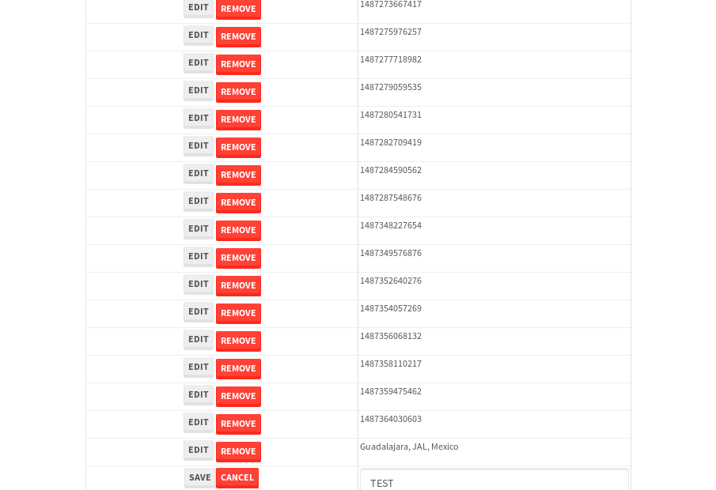

tbColumn.Grid Sorting - 28.536sTests: 5Skipped: 0Failures: 0 should sort data in ascending order then on descending order when sorting by Order Id column - 5.821sTests passed: 100.00%should order data in ascending order when click-sorting an unsorted text column - 5.31sTests passed: 100.00%should order data in descending order when click-sorting an ascending-sorted text column - 6.023sTests passed: 100.00%should order data in ascending order when click-sorting an unsorted date column - 5.605sTests passed: 100.00%should order data in descending order when click-sorting twice an unsorted date column - 5.775sTests passed: 100.00%
tbColumn.Grid Components - 5.003sTests: 3Skipped: 0Failures: 0 should print grid - 1.726s***Skipped***Tests passed: 0%should export grid - 1.787s***Skipped***Tests passed: 0%should show column selector - 1.49sTests passed: 100.00%
tbSingleForm.Form validations - 2.938sTests: 2Skipped: 0Failures: 0 should have an empty required field - 1.575sTests passed: 100.00%should not be able to click on save - 1.363sTests passed: 100.00%
Tubular Filters.tbColumnFilter - 113.522sTests: 12Skipped: 0Failures: 0 should cancel filtering when clicking outside filter-popover - 10.547sTests passed: 100.00%should disable Value text-input for "None" filter - 7.285sTests passed: 100.00%should disable apply button for "None" filter - 6.801sTests passed: 100.00%should decorate popover button when showing data is being filtered for its column - 12.296sTests passed: 100.00%should correctly filter data for the "Equals" filtering option - 8.871sTests passed: 100.00%should correctly filter data for the "Not Equals" filtering option - 9.502sTests passed: 100.00%should correctly filter data for the "Contains" filtering option - 9.292sTests passed: 100.00%should correctly filter data for the "Not Contains" filtering option - 9.124sTests passed: 100.00%should correctly filter data for the "Starts With" filtering option - 7.014sTests passed: 100.00%should correctly filter data for the "Not Starts With" filtering option - 7.113sTests passed: 100.00%should correctly filter data for the "Ends With" filtering option - 7.364sTests passed: 100.00%should correctly filter data for the "Not Ends With" filtering option - 7.132sTests passed: 100.00%
Tubular Filters.tbColumnDateTimeFilter - 138.077sTests: 12Skipped: 0Failures: 0 should cancel filtering when clicking outside filter-popover - 7.6sTests passed: 100.00%should disable Value text-input for "None" filter - 6.953sTests passed: 100.00%should disable apply button for "None" filter - 7.421sTests passed: 100.00%should clear filtering when clicking on Clean button - 17.917sTests passed: 100.00%should decorate popover button when showing data is being filtered for its column - 11.939sTests passed: 100.00%should correctly filter data for the "Equals" filtering option - 6.701sTests passed: 100.00%should correctly filter data for the "Not Equals" filtering option - 7.304sTests passed: 100.00%should correctly filter data for the "Between" filtering option - 12.512sTests passed: 100.00%should correctly filter data for the "Greater-or-equal" filtering option - 12.232sTests passed: 100.00%should corretlly filter data for the "Greater" filtering option - 12.139sTests passed: 100.00%should correctly filter data for the "Less-or-equal" filtering option - 12.25sTests passed: 100.00%should correctly filter data for the "Less" filtering option - 12.322sTests passed: 100.00%
Tubular Filters.tbColumnOptionsFilter - 82.757sTests: 3Skipped: 0Failures: 0 should cancel filtering when clicking outside filter-popover - 10.202sTests passed: 100.00%should decorate popover button when showing data is being filtered for its column - 12.049sTests passed: 100.00%should filter column-elements in accordance to the selected filter when selecting a single option - 49.106sTests passed: 100.00%
Tubular Filters.tbTextSearch - 49.155sTests: 5Skipped: 0Failures: 0 min-chars is not set - 1.318sTests passed: 100.00%should filter data in searchable-column customer name to matching inputted text, starting from 3 characters - 6.983sTests passed: 100.00%should filter data in searchable-column shipper city to matching inputted text, starting from 3 characters - 11.869sTests passed: 100.00%should show clear button when there is inputted text only - 6.523sTests passed: 100.00%should clear filtering when clicking clear button - 16.823sTests passed: 100.00%
tbForm related components.tbCheckboxField - 7.886sTests: 2Skipped: 0Failures: 0 should save changes on "SAVE" - 4.148sTests passed: 100.00%should discard changes on "CANCEL" - 2.049sTests passed: 100.00%
tbForm related components.tbDropDownEditor - 13.501sTests: 5Skipped: 0Failures: 0 should set initial input value to the value of "value" attribute when defined - 2.42sTests passed: 100.00%should show the component name value in a label field when "showLabel" attribute is true - 2.067sTests passed: 100.00%should show a help field equal to this attribute, is present - 2.045sTests passed: 100.00%should submit modifications to item/server when clicking form "Save" - 3.623sTests passed: 100.00%should NOT submit modifications to item/server when clicking form "Cancel" - 2.769sTests passed: 100.00%
tbForm related components.tbTextArea - 19.275sTests: 7Skipped: 0Failures: 0 should set initial input value to the value of "value" attribute when defined - 2.327sTests passed: 100.00%should be invalidated when the number of chars is not in the range of "min" and "max" attributes - 2.603sTests passed: 100.00%should show the component name value in a label field when "showLabel" attribute is true - 2.085sTests passed: 100.00%should show a help field equal to this attribute, is present - 1.955sTests passed: 100.00%should require the field when the attribute "required" is true - 2.688sTests passed: 100.00%should submit modifications to item/server when clicking form "Save" - 3.749sTests passed: 100.00%should NOT submit modifications to item/server when clicking form "Cancel" - 3.057sTests passed: 100.00%
tbForm related components.tbDateEditor - 18.109sTests: 6Skipped: 0Failures: 3 should set initial date value to the value of "value" attribute when defined - 2.254sExpected false to be true.✗Tests passed: 0.00%should be invalidated when the date is not in the range of "min" and "max" attributes - 2.887sTests passed: 100.00%should show the component name value in a label field when "showLabel" attribute is true - 2.553sTests passed: 100.00%should show a help field equal to this attribute, is present - 2.976sTests passed: 100.00%should submit modifications to item/server when clicking form "Save" - 2.795sExpected false to be true.✗Tests passed: 0.00%should NOT submit modifications to item/server when clicking form "Cancel" - 2.847sExpected false to be true.✗Tests passed: 0.00%
tbForm related components.tbTypeaheadEditor - 20.029sTests: 7Skipped: 0Failures: 0 should show an options list when there is an API-info/component entered-data - 2.43sTests passed: 100.00%should select the option clicked - 2.175sTests passed: 100.00%should show a "delete" button when an option/match is selected, and delete the option if button is clicked - 2.589sTests passed: 100.00%should show a label value equal to the component name when "showLabel" attribue is true - 2.635sTests passed: 100.00%should require a value when "require" attribute is true - 3.117sTests passed: 100.00%should submit modifications to item/server when clicking form "Save" - 3.988sTests passed: 100.00%should NOT submit modifications to item/server when clicking form "Cancel" - 2.226sTests passed: 100.00%
tbForm related components.tbSimpleEditor - 21.396sTests: 9Skipped: 0Failures: 0 should set initial input value to the value of "value" attribute when defined - 2.088sTests passed: 100.00%should be invalidated when the number of chars is not in the range of "min" and "max" attributes - 2.466sTests passed: 100.00%should show the component name value in a label field when "showLabel" attribute is true - 1.898sTests passed: 100.00%should set input placeholder to the value of "placeholder" attribute - 2.302sTests passed: 100.00%should validate the control using the "regex" attribute, if present - 2.005sTests passed: 100.00%should show a help field equal to this attribute, is present - 1.927sTests passed: 100.00%should require the field when the attribute "required" is true - 2.092sTests passed: 100.00%should submit modifications to item/server when clicking form "Save" - 3.465sTests passed: 100.00%should NOT submit modifications to item/server when clicking form "Cancel" - 2.216sTests passed: 100.00%
tbForm related components.tbNumericEditor - 17.375sTests: 7Skipped: 0Failures: 0 should set initial component value to the value of "value" attribute when defined - 1.737sTests passed: 100.00%should be invalidated when the entered number is not in the range of "min" and "max" attributes - 2.59sTests passed: 100.00%should show the component name value in a label field when "showLabel" attribute is true - 1.925sTests passed: 100.00%should show a help field equal to this attribute, is present - 2.249sTests passed: 100.00%should require the field when the attribute "required" is true - 2.176sTests passed: 100.00%should submit modifications to item/server when clicking form "Save" - 3.34sTests passed: 100.00%should NOT submit modifications to item/server when clicking form "Cancel" - 2.615sTests passed: 100.00%
tbForm Connection Error NoModelKey - 4.448sTests: 1Skipped: 0Failures: 0 tbForm connection error functionality - 0.699sTests passed: 100.00%
tbForm Connection Error NoServerUrl - 2.588sTests: 1Skipped: 0Failures: 0 tbForm connection error functionality - 0.563sTests passed: 100.00%
tbGridComponents - 33.561sTests: 6Skipped: 0Failures: 3 should add item with newRow method - 4.967sExpected 'EDIT REMOVE TEST' not to be 'EDIT REMOVE TEST'.✗Tests passed: 50.00%should add item with newRow method and cancel action - 1.6sTests passed: 100.00%should update item with tbSaveButton - 2.129sExpected '' to be 'TEST'.✗Tests passed: 0.00%should NOT update item on cancel Update action - 1.08sFailed: ElementNotVisibleError✗Tests passed: 0.00%should remove item with tbRemoveButton - 21.331sTests passed: 100.00%should NOT remove item on cancel Remove action - 1.011sTests passed: 100.00%
tbGridPager.navigation buttons - 9.367sTests: 1Skipped: 0Failures: 0 should perform no action when clicking on the numbered navigation button corresponding to the current-showing results page - 1.245sTests passed: 100.00%
tbGridPager.navigation buttons.first/non-last results page related functionallity - 4.005sTests: 2Skipped: 0Failures: 0 should disable "first" and "previous" navigation buttons when in first results page - 1.887sTests passed: 100.00%should enable "last" and "next" navigation buttons when in a results page other than last - 2.118sTests passed: 100.00%
tbGridPager.navigation buttons.last/non-first results page related functionallity - 4.117sTests: 2Skipped: 0Failures: 0 should disable "last" and "next" navigation buttons when in last results page - 1.882sTests passed: 100.00%should enable "first" and "previous" navigation buttons when in a results page other than first - 2.235sTests passed: 100.00%
tbGridPager.page navigation - 8.242sTests: 5Skipped: 0Failures: 0 should go to next results page when clicking on next navigation button - 1.747sTests passed: 100.00%should go to previous results page when clicking on previous navigation button - 1.806sTests passed: 100.00%should go to last results page when clicking on last navigation button - 1.486sTests passed: 100.00%should go to first results page when clicking on first navigation button - 1.519sTests passed: 100.00%should go to corresponding results page when clicking on a numbered navigation button - 1.683sTests passed: 100.00%
tbGridPagerInfo - 4.549sTests: 2Skipped: 0Failures: 0 should show text in accordance to numbered of filter rows and current results-page - 1.201sTests passed: 100.00%should show count in footer - 0.514sTests passed: 100.00%
tbHttp - 19.463sTests: 8Skipped: 1Failures: 0 should be authenticated - 3.279sTests passed: 100.00%retrieve data - 2.334sTests passed: 100.00%should not login bad credentials - 2.204sTests passed: 100.00%should have a refresh token - 4.59sTests passed: 100.00%should remove authentication - 2.344sTests passed: 100.00%get method-Is not authenticated - 2.393sTests passed: 100.00%post method-Is not authenticated - 2.317sTests passed: 100.00%should regenerate access token on post - 0s***Skipped***Tests passed: 0%
tbPageSizeSelctor - 9.764sTests: 4Skipped: 0Failures: 0 should filter up to 10 data rows per page when selecting a page size of "10" - 2.68sTests passed: 100.00%should filter up to 20 data rows per page when selecting a page size of "20" - 1.5sTests passed: 100.00%should filter up to 50 data rows per page when selecting a page size of "50" - 2.155sTests passed: 100.00%should filter up to 100 data rows per page when selecting a page size of "100" - 1.897sTests passed: 100.00%
tbRowSelectable - 9.844sTests: 2Skipped: 0Failures: 0 selected rows - 4.489sTests passed: 100.00%unselected rows - 3.712sTests passed: 100.00%
tbSingleForm - 20.479sTests: 8Skipped: 0Failures: 1 should load correct info - 2.309sTests passed: 100.00%should change customer name - 2.597sTests passed: 100.00%should save it - 2.882sFailed: Element is not enabled✗Tests passed: 0.00%should clear the inputs - 2.407sTests passed: 100.00%should update - 2.909sTests passed: 100.00%should reset editor - 2.473sTests passed: 100.00%should not save if not Changes - 2.425sTests passed: 100.00%should not be able to click on save - 2.476sTests passed: 100.00%


{kind=link}